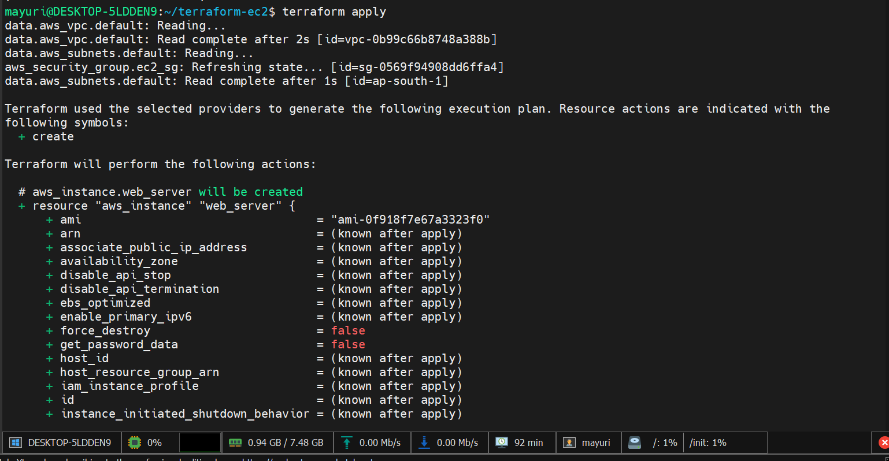
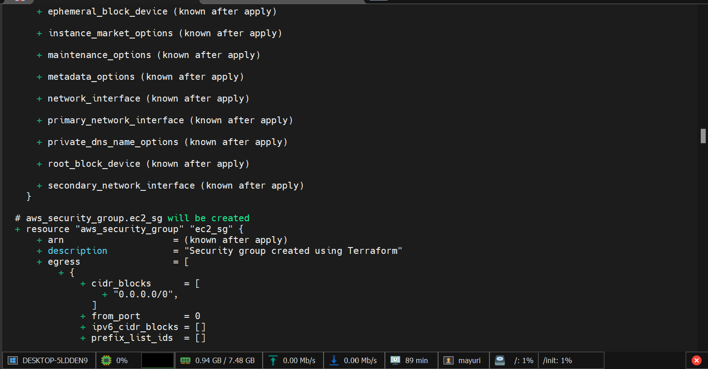
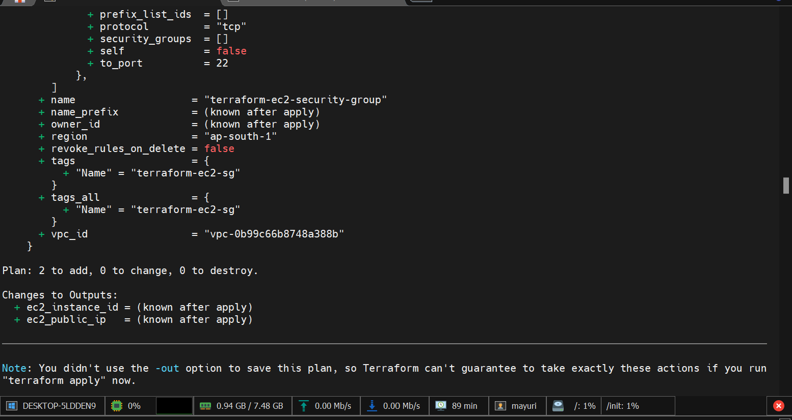
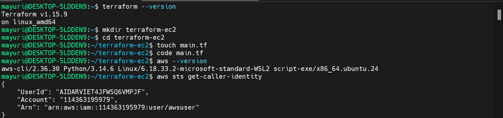
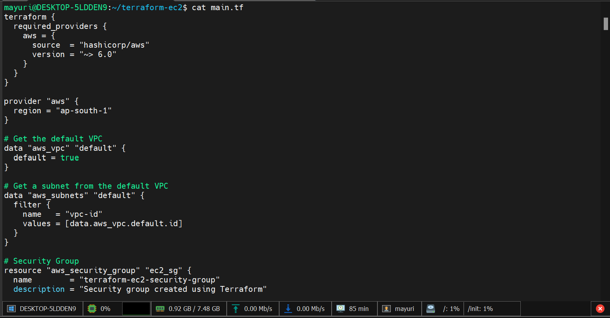

Create an AWS EC2 instance using Terraform and configure Docker and Nginx on the instance.
AWS EC2, Terraform, Docker and Nginx
terraform init
terraform validate
terraform plan
terraform apply
Terraform has been successfully initialized!
Success! The configuration is valid.
Apply complete! Resources: 1 added, 0 changed, 0 destroyed.
docker --version
sudo docker ps
Docker was installed automatically on the EC2 instance using Terraform user_data, and the Nginx container was verified.
The Terraform configuration successfully created the EC2 infrastructure and configured Docker and Nginx.
Some screenshots from the task execution are shown below.




